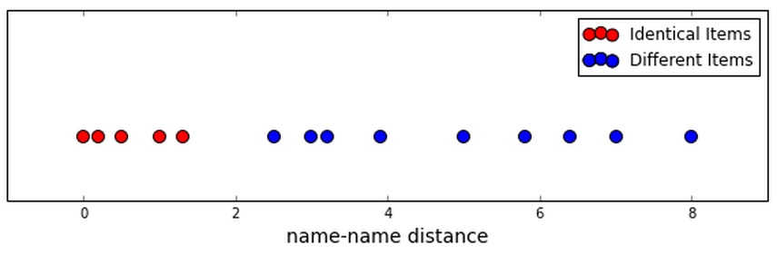
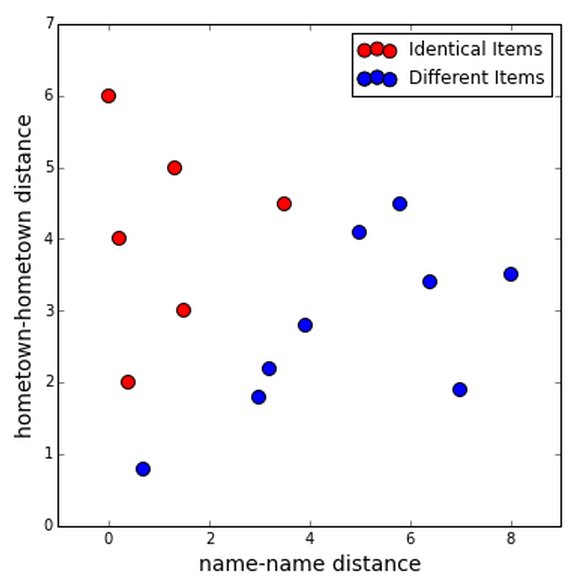
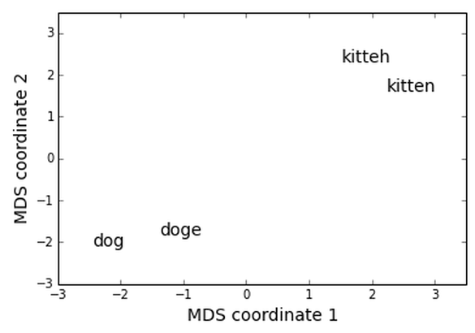

Practical Mergic
Saturday May 30, 2015
A talk for the Open Data Science Conference in Boston on Saturday May 30, 2015. Including some material originally given in a talk for the New York Open Statistical Programming Meetup on Wednesday May 20, 2015 and a lightning talk at the May meeting (registration) of the PyData NYC meetup group.
@planarrowspace
Hi! I'm Aaron. This is my blog and my twitter handle. You can get from one to the other. This presentation and a corresponding write-up (you're reading it) are on my blog (which you're on).
I've also done a longer version and a shorter version of this talk, and those are also on the blog. So if you find yourself wanting more you can get more, and if you want less I can also give you less.
This is probably the cheekiest of the three versions.

Here's an official cover slide.

I teach at Metis, and I'm really happy that we're helping sponsor the Open Data Science Conference. Metis is a data science bootcamp, currently just in New York (sorry Boston). We get the best people, we have a lot of fun, and at the end out come data scientists that you could hire.
I could just talk about Metis, but instead I thought it'd be a good idea to talk about un-sexy everyday problems.
problem
In general it's just one problem, and if you work with data you have this problem.
your data sucks
Data is awful! You do not want to swim in a data lake. It's a mess out there!
Of course these days we have open data, which is a huge improvement.
our data sucks
So maybe we release some data sets, put them on a nice Socrata open data portal...
dbn grade year category num_tested
01M019 3 2010 Female 16
01M019 3 2010 Male 20
01M019 3 2010 Male 2Here's an example of open data released by the New York City Department of Education.
The dbn is a school identifier, and grade and year make sense. This file has the number of students tested in three categories: “Female”, “Male”, and “Male”.
What does that mean?
There are fourteen hundred extra “Male” rows like this!
You can look more deeply into this and conclude with some confidence that you can probably drop these extra “Male” rows. It's clearly a mistake of some kind.

Original image from Magnolia via Indie Outlook.
This is a scene from a movie called Magnolia where it's raining frogs. One of the things they say in that movie is that strange things happen, and if you've worked with any variety of data sets, you've probably encountered very strange things indeed. You need to check everything—including things that you shouldn’t have to check.
I would also like to offer, before I get to what I'm really going to talk about, that it is a serious problem that I can't easily contribute a fix to that DOE data set. We should expect collaborative checking and editing of data sets to be part of the benefit of open data.
I don't know of any system currently in existence that does this well. We need something in between Wikipedia and GitHub. The dat project isn't doing it, at least not yet. I like the architecture of Datomic, but it's not quite right either. Wikidata might be moving in the right direction, but I'm not sure yet.
problems when names are the same
How is this relevant to merging? Well, lots of things can go wrong when you have exact duplicates that you aren't expecting.
merge
One big reason to want nice unique IDs is that you would like to merge two data sets, and you need something to match records by. Let's do a quick refresher on merging, or joining.

This is a section from RStudio's cheatsheet for dplyr. These cheatsheets are fantastic.
We'll do a merge between two data sets. For simplicity say that they have one column which is an identifier for each row, and some data in other columns. There are a couple ways we can join the data.
Some people like to think about these in terms of Venn diagrams.

This picture comes from Jeff Atwood's post called visual explanation of SQL joins.
A former co-worker told me that seeing these pictures changed his life. I hope you like them.
This is a left join: you get all the keys from the left data set, regardless of whether they're in the right data set.

Jeff Atwood doesn't have a picture of a right join on his blog, but you can make one with a little ImageMagick.
$ convert -rotate 180 left_join.png right_join.pngYou're welcome.

An inner join, or natural join, only gives you results for keys that appear in both the left and right data sets.

And an outer join gives you everything. Great!
There are a few other terms we could add, but let's not.
Here's the dplyr summary again. You can see how you can introduce missing values when doing left, right, and outer joins.
Ready? Here's a test.
How many rows do you get when you outer join two tables?
Think about this question, discuss it with somebody near you, come up with everything you can say about the number of rows you might expect when you join two tables. Introduce any quantities you think you'd like to know.
Take about three minutes and then come back.
three minutes pass
Say there are \( N \) rows in the first table and \( M \) rows in the second table. Then the smallest number of rows we can get from the outer join is the greater of \( N \) and \( M \). But we might get as many as \( N \cdot M \) rows, if all the keys are the same!
If you said the maximum was \( N + M \), you were probably assuming, implicitly or explicitly, that all they keys were unique. This is a common assumption that you should really check.
> nrow(first)
## [1] 3
> nrow(second)
## [1] 3
> result <- merge(first, second)
> nrow(result)
## [1] 3This code is runnable in count_trouble.R.
Is it enough to check the numbers of rows when we do joins?
This does an inner join, which is the default for merge in R. (I'm using R here as a personal favor to Jared Lander.)
Think about it.
x y1 x y2 x y1 y2
1 looks 1 good 1 looks good
2 oh 2 boy 2 oh boy
3 well 2 no 2 oh noThere is no peace while you don't have unique IDs.
There are times when you don't want every ID to be unique in a table, but really really often you do. You probably want to check that uniqueness explicitly.
problems when names are the same
This has been a discussion of problems arising from names being the same.
problems when names aren't the same
And now, you probably also want to check that the intersection you get is what you expect.
You don't want to silently drop a ton of rows when you merge!
This is the beginning of our problems with names that aren't the same.
let's play tennis
I downloaded the Tennis Major Tournament Match Statistics Data Set from the University of California, Irvine Machine Learning Repository.
Do you know the process for getting a data set up up on the UCI ML repository?
The process is this: You fill in a form on their web site, and then maybe they put up your data set.
$ head -2 AusOpen-women-2013.csv | cut -c 1-40
## Player1,Player2,Round,Result,FNL1,FNL2,F
## Serena Williams,Ashleigh Barty,1,1,2,0,5
$ head -2 USOpen-women-2013.csv | cut -c 1-40
## Player 1,Player 2,ROUND,Result,FNL.1,FNL
## S Williams,V Azarenka,7,1,2,1,57,44,43,2There are eight files like this. You can see that the player names are not perfectly consistent.
Some good people up-state New York contributed this data set, and I got in touch with them. I was curious about where the data came from; it was scraped from some web sites. Did they use it in any of their classes? Yes, it was used for some activities. Did they use it for teaching any particular data cleaning techniques? I haven't heard back since then.
$ wc -l names.txt
## 1886
$ sort names.txt | uniq | wc -l
## 669So we'll take the tennis player names as our example data set. We have a file with 1,886 names, 669 of which are unique.
There are too many unique strings—sometimes more than one string for the same player. As a result, a count of the most common names will not accurately tell us who played the most in these 2013 tennis competitions.
$ sort names.txt | uniq -c | sort -nr | head -5
## 21 Rafael Nadal
## 17 Stanislas Wawrinka
## 17 Novak Djokovic
## 17 David Ferrer
## 15 Roger FedererThe list above is not the answer we’re looking for. We want to be correct.
single field deduplication
We're going to think about this problem, which is pretty common, of de-duplicating (or making a merge table for) a single text field.
Lukas Lacko F Pennetta
Leonardo Mayer S Williams
Marcos Baghdatis C Wozniacki
Santiago Giraldo E Bouchard
Juan Monaco N.Djokovic
Dmitry Tursunov S.Giraldo
Dudi Sela Y-H.Lu
Fabio Fognini T.Robredo
... ...To be clear, the problem looks like this. And the problem often looks like this: You have either two columns with slightly different versions of identifiers, or one long list of things that you need to resolve to common names. These problems are fundamentally the same.
Do you see the match here? (It's Santiago!)
So we need to find the strings that refer to the same person.

Open Refine is quite good.
An interesting side story is that Open Refine was formerly Google Refine, and before that Metaweb's “Freebase Gridworks”. Google is shutting down Freebase, and we have to hope that Wikidata will then be the open match for Google's Knowledge Graph.
Open Refine is quite good, but there are several things I wish it did differently.
For one, although it has an internal record of changes, the interface Open Refine exposes changes your data in place. That's not okay.
Cluster ID,name
1,Lukas Lacko
2,Leonardo Mayer
3,Marcos Baghdatis
...One way to keep output from a deduplication process is a merge table like this. The csvdedupe interface on the Python dedupe project from DataMade in Chicago will give you this kind of output. It's much better than no accessible record of the transformation, but it's also not a format I want to look at, as a human.
{
"Ann's group": [
"Ann"
],
"Bob's group": [
"Bob",
"Robert"
]
}Here's a format that I propose could be usable for describing deduplication. It's as readable by humans as any JSON, and it can be easily produced and consumed by anything that speaks JSON, which is everything.
new,original
Ann's group,Ann
Bob's group,Bob
Bob's group,RobertYou can still produce a merge table from the JSON representation, and it will have whatever new keys you specify, possibly human-readable ones.

mergic is a tool that supports doing deduplication with these conventions.
- simple
- customizable
- reproducible
The goals of mergic are to be:
- simple, meaning largely text-based and obvious; the tool disappears
- customizable, meaning you can easily use a custom distance function
- reproducible, meaning everything you do can be done again automatically
the tool disappears
Good tools disappear.
Whatever text editor you use, the your work product is a text file. You can use any text editor, or use different ones for different purposes, and so on.
Your merge process shouldn't rely on any particular piece of software for its replicability.
any distance function
Your distance function can make all the difference. You need to be able to plug in any distance function that works well for your data.
really reproducible
People can see what's happening, and computers can keep doing the process without clicking or re-running particular executables.

A quick disclaimer!
This is John Langford's slide, about what big data is. He says that small data is data for which \( O(n^2) \) algorithms are feasible. Currently mergic is strictly for this kind of "artisanal" data, where we want to ensure that our matching is correct but want to reduce the amount of human work to ensure that. And we are about to get very \( O(n^2) \).
Santiago Giraldo,Leonardo Mayer
Santiago Giraldo,Dudi Sela
Santiago Giraldo,Juan Monaco
Santiago Giraldo,S Williams
Santiago Giraldo,C Wozniacki
Santiago Giraldo,S.Giraldo
Santiago Giraldo,Marcos Baghdatis
Santiago Giraldo,Y-H.Lu
...So we make all possible pairs of identifiers!
One of the things that Open Refine gets right is that it doesn't show us humans all the pairs it's looking at.
All these pairs are annoying for a computer, and awful for humans. The computer can calculate a lot of pairwise distances, but I don't want to look at all the pairs.
Do you see the match here? (It's Santiago again!)
Karolina Pliskova,K PliskovaAside from being a drag to look at, there's a bigger problem with verifying equality on a pairwise basis.
Do these two records refer to the same person? (Tennis fans may see where I'm going with this.)
Kristyna Pliskova,K PliskovaKarolina has a twin sister, and Kristyna also plays professional tennis! This may well not be obvious if you only look at pairs individually. What matters is the set of names that are transitively judged as equal.
sets > pairs
Both perceptually and logically, it's better to think in sets than in a bunch of individual pairs.
workflow support for reproducible deduplication and merging
This is what mergic is for. mergic is a simple tool designed to make it less painful when you need to merge things that don't yet merge.
demo: mergic tennis
With all that background, let's see how mergic attempts to support a good workflow.
$ pew new odscI'll start by making a new virtual environment using pew.
$ pip install mergicmergic is very new (version 0.0.6) and it currently installs with no extra dependencies.
$ mergic -hmergic includes a command-line script based on argparse that uses a default string distance function.
usage: mergic [-h] {calc,make,check,diff,apply,table} ...
positional arguments:
{calc,make,check,diff,apply,table}
calc calculate all partitions of data
make make a JSON partition from data
check check validity of JSON partition
diff diff two JSON partitions
apply apply a patch to a JSON partition
table make merge table from JSON partition
optional arguments:
-h, --help show this help message and exitIn the tennis data, names appear sometimes with full first names and sometimes with only first initials. To get good comparisons, we should:
- Transform all the data to the same format, as nearly as possible.
- Use a good distance on the transformed data.
We can do both of these things with a simple custom script, tennis_mergic.py. It only requires the mergic and python-Levenshtein packages.
#!/usr/bin/env python
import re
import Levenshtein
import mergic
def first_initial_last(name):
initial = re.match("^[A-Z]", name).group()
last = re.search("(?<=[ .])[A-Z].+$", name).group()
return "{}. {}".format(initial, last)
def distance(x, y):
x = first_initial_last(x)
y = first_initial_last(y)
return Levenshtein.distance(x, y)
mergic.Blender(distance).script()Note that there's a transformation step in there, normalizing the form of the names to have just a first initial and last name. This kind of normalization can be very important.
As a more extreme example, a friend of mine has used the following transform: Google it. Then you can use a distance on the result set to deduplicate.
Now tennis_mergic.py can be used just like the standard mergic script.
$ ./tennis_mergic.py calc names.txt
## num groups, max group, num pairs, cutoff
## ----------------------------------------
## 669, 1, 0, -1
## 358, 5, 384, 0
## 348, 6, 414, 1
## 332, 6, 470, 2
## 262, 85, 5117, 3
## 165, 324, 52611, 4
## 86, 496, 122899, 5
## 46, 584, 170287, 6
## 24, 624, 194407, 7
## 16, 641, 205138, 8
## 10, 650, 210940, 9
## 4, 663, 219459, 10
## 2, 668, 222778, 11
## 1, 669, 223446, 12There is a clear best cutoff here, as the size of the max group jumps from 6 items to 85 and the number of within-group comparisons jumps from 470 to 5,117. So we create a partition where the Levenshtein distance between names in our standard first initial and last name format is no more than two, and put the result in a file called groups.json:
$ ./tennis_mergic.py make names.txt 2 > groups.jsonThis kind of JSON grouping file could be produced and edited by anything, not just mergic.
As expected, the proposed grouping has combined things over-zealously in some places:
$ head -5 groups.json
## {
## "Yen-Hsun Lu": [
## "Di Wu",
## "Yen-Hsun Lu",
## "Y-H.Lu",Manual editing can produce a corrected version of the original grouping, which could be saved as edited.json:
$ head -8 edited.json
## {
## "Yen-Hsun Lu": [
## "Yen-Hsun Lu",
## "Y-H.Lu"
## ],
## "Di Wu": [
## "Di Wu"
## ],Parts of the review process would be difficult or impossible for a computer to do accurately.
After editing, you can check that the new grouping is still valid. At this stage we aren't using anything custom any more, so the default mergic is fine:
$ mergic check edited.json
## 669 items in 354 groupsThe mergic diffing tools make it easy to make comparisons that would otherwise be difficult, letting us focus on and save only changes that are human reviewers make rather than whole files.
$ mergic diff groups.json edited.json > diff.jsonNow diff.json only has the entries that represent changes from the original groups.json.
The edited version can be reconstructed from the original and the diff with mergic apply:
$ mergic apply groups.json diff.json > rebuilt.jsonThe order of rebuilt.json may not be identical to the original edited.json, but the diff will be empty, meaning the file is equivalent:
$ mergic diff edited.json rebuilt.json
## {}Finally, to generate a CSV merge table that you'll be able to use with any other tool:
$ mergic table edited.json > merge.csvNow the file merge.csv has two columns, original and mergic, where original contains all the values that appeared in the original data and mergic contains the deduplicated keys. You can join this on to your original data and go to town.
Here's how we might do that to quickly get a list of who played the most in these 2013 tennis events:
$ join -t, <(sort names.txt) <(sort merge.csv) | cut -d, -f2 | sort | uniq -c | sort -nr | head
## 24 Novak Djokovic
## 22 Rafael Nadal
## 21 Serena Williams
## 21 David Ferrer
## 20 Na Li
## 19 Victoria Azarenka
## 19 Agnieszka Radwanska
## 18 Stanislas Wawrinka
## 17 Tommy Robredo
## 17 Sloane StephensNote that this is not the same as the result we got before resolving these name issues:
$ sort names.txt | uniq -c | sort -nr | head
## 21 Rafael Nadal
## 17 Stanislas Wawrinka
## 17 Novak Djokovic
## 17 David Ferrer
## 15 Roger Federer
## 14 Tommy Robredo
## 13 Richard Gasquet
## 11 Victoria Azarenka
## 11 Tomas Berdych
## 11 Serena WilliamsAs it happens, using a cutoff of 0 and doing no hand editing will still give the correct top ten. In general the desired result and desired level of certainty in its correctness will inform the level of effort that is justified.
distance matters
Having a good distance function might be the most important thing. It's hard to imagine a machine learning as good a distance function as you could just right based on your human intelligence.
There is work on learnable edit distances; notably there's a current Python project to implement hidden alignment conditional random fields for classifying string pairs: pyhacrf. Python dedupe is eager to incorporate this.
See also: Adaptive Duplicate Detection Using Learnable String Similarity Measures
extension to multiple fields
We've been talking about single field deduplication.
name
----
Bob
Rob
RobertThis means that we have one field, say name.
name, name
----------
Bob, Bobby
Bob, Robert
Bobby, RobertAnd we look at all the possible pairs and calculate those pairwise distances.

While we described it even in Open Refine as “clustering”, we've really been doing a classification task: either a pair is in the same group or they aren't. We've had one dimension, and we hope that we can just divide true connections from different items with a simple cutoff.
name, hometown
-----------------
Bob, New York
Rob, NYC
Robert, "NY, NY"Often, there's more than one field involved, and it might be good to treat all the fields separately.
So let's calculate distances between each field entry for each pair of rows, in this case.

The reason it might be good to treat the fields separately is that they might be more useful together; we might be able to classify all the true duplicates using the information from both fields.
Maybe you can find two clusters, one for true duplicates and one for different items.
Or maybe you could get some training data and use whatever classification algorithm you like.
The Python dedupe project and the R RecordLinkage package do this.
The csvdedupe interface using dedupe even asks us to clarify things, doing a live training phase. The hope is that it will learn what matters.
You can also build this kind of behavior into your own systems; there is an example.
real clustering?
The “clustering” that we've been doing hasn't been much like usual clustering.
In part, this is because we we've only had distances between strings without having a real “string space”.
I'm going to just sketch out this direction; I think it's interesting but I haven't seen any real results in it yet.
dog, doge, kitten, kitteh
Say these are the items we're working with. We can use Levenshtein edit distance to make a distance matrix.
dog doge kitten kitteh
dog 0 1 6 6
doge 1 0 5 5
kitten 6 5 0 1
kitteh 6 5 1 0So here's a distance matrix, and it looks the way we'd expect. But we still don't have coordinates for our words.
Luckily, there is at least one technique for coming up with coordinates when you have a distance matrix. Let's use multidimensional scaling! There's a nice implementation in sklearn.
from sklearn.manifold import MDS
mds = MDS(dissimilarity='precomputed')
coords = mds.fit_transform(distances)Here's all the code it takes.

And here's the result! This is at least a fun visualization, and I wonder if doing clustering in a space like this might sometimes lead to better results.
The key thing here is that we're clustering on the elements themselves, rather than indirectly via the pairwise distances.
There are other ways of getting coordinates for words. This includes the very interesting word2vec and related techniques.
Also, you might have items are already naturally coordinates, for example if you have medical data like a person's height or weight.
open
This is the Open Data Science Conference, right?
This mergic project is something I think could be a good direction for particular kinds of data problems. Of course it's on GitHub and of course I'd love help in making it something that might actually help people.
Our community is bigger than any one problem or any one solution, and I want to hear about what problems are real for you and what solutions you're excited about.
Thanks!
Thanks for listening—let's talk!
@planarrowspace
This is just me again.